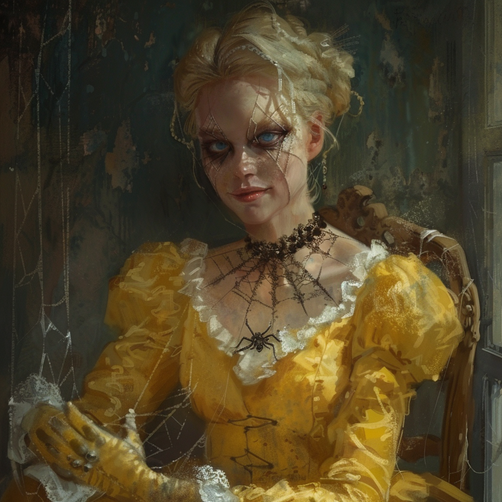

|  |
Volenta PopfskyVolenta Popfsky est l'une des consorts de Strahd von Zarovich. Volenta nous a attaquer sur le pont de la chute de Tser, elle cherchait en particulier à tuer Ireena. Volenta a fait partie de l'attque contre la ville de Vallaki, elle s'est réfugiée dans la Cathédral de Saint Andral en nous attendans. Nous avons finalement reussis à la tuer, sa mort est une victoire, elle ne pourras plus faire de mal à quique ce soit maintenant... |